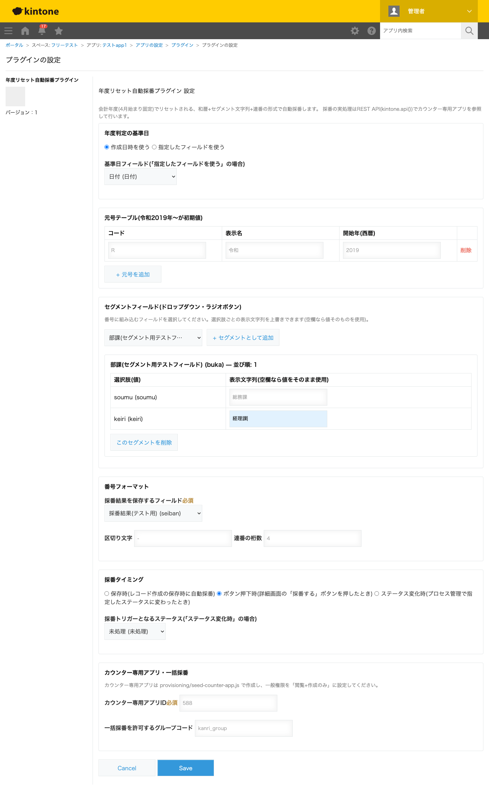

GovAppsプラグイン 安全性を確認できる無料kintoneプラグイン集
会計年度(4月始まり固定)でリセットされる連番を、和暦(元号+元号年)+セグメント文字列+連番の形式で
自動採番するプラグインです(例: R6-総務課-請求書-0007)。
外部のAPIキー・APIトークンは一切使用しません。
採番の実処理はすべて、ログイン中のご自身のkintoneアカウントのセッションを使うREST API
(kintone.api())だけで完結します。プラグインの設定画面にも認証情報を入力する欄は
一つもありません。番号の重複を防ぐために「カウンター専用アプリ」を1つだけ用意していただく必要が
ありますが、これも同じ仕組み(閲覧・作成権限のみを持つ、あなた自身のkintoneアプリ)で動きます。
採番するタイミングは、レコード保存時・ボタン押下時・プロセス管理のステータス変化時から選べます。
会計年度(4月始まり)が変わると連番を1からリセットしたい、かつ和暦(令和など)と部署名などのセグメントを組み合わせた「R6-総務課-請求書-0007」のような形式で採番したい、という官公庁でよくある文書番号の運用にそのまま対応できます。元号テーブルは設定画面から追加できるため、将来の改元にも対応できます。
カウンター専用アプリは環境に1つ作れば十分です。採番のキーには対象アプリのIDが自動的に組み込まれるため、複数のアプリにこのプラグインをインストールしても、それぞれのアプリごとに連番が独立してカウントされます(同じカウンター専用アプリIDを、それぞれのプラグイン設定画面に入力するだけです)。
レコード作成時にすぐ採番せず、担当者が詳細画面の「採番する」ボタンを押したときや、プロセス管理で特定のステータス(例: 「承認済み」)に変わったときだけ採番することもできます。下書き段階のレコードに番号を振ってしまい、欠番や番号の使い回しが発生するのを防げます。
採番の重複を防ぐため、このプラグインは「カウンター専用アプリ」というkintoneアプリを1つ必要とします。 少し手順が多く見えますが、すべて通常のkintone管理画面(アプリの新規作成・フィールド追加)だけで完結し、 プログラミングの知識やAPIキーの発行は一切不要です。環境に1つ作れば、複数のアプリで使い回せます。
| フィールドコード | 種類 | 備考 |
|---|---|---|
key_sequence | 文字列(1行) | 必須・「値の重複を禁止する」を有効にする(下記手順3) |
combination_key | 文字列(1行) | 必須 |
sequence_number | 数値 | 必須 |
target_app_id | 数値 | |
fiscal_year | 数値 | |
era_code | 文字列(1行) | |
era_year | 数値 | |
segment_summary | 文字列(複数行) | |
segment_1_code 〜 segment_5_code | 文字列(1行) | 任意。セグメント機能を使う場合のみ(最大5個まで) |
segment_1_value 〜 segment_5_value | 文字列(1行) | 任意。セグメント機能を使う場合のみ(最大5個まで) |
key_sequenceフィールドの設定を開き、「値の重複を禁止する」を有効にするhttps://(サブドメイン).cybozu.com/k/(数字)/)の数字部分がアプリIDです。
複数のアプリで採番したい場合、カウンター専用アプリ(手順1〜5)は環境に1つ作れば十分です。2つ目以降の 対象アプリでは手順6・7だけを繰り返し、同じカウンター専用アプリIDを入力してください。
kintoneセキュアコーディングガイドラインに沿って実装時にチェックしています。特に重要な点は次のとおりです。
kintone.api()(内部向けラッパー)経由で行い、kintone.plugin.app.setProxyConfig()やkintone.plugin.app.proxy()は一切使用していません。外部サーバーへの通信・外部ライブラリの読み込みも一切行いません。key_sequence)への違反検知+自動リトライで行い(最大試行回数あり、無限リトライにはなりません)、revisionベースの排他制御(編集権限が必要になる方式)は使っていません。詳細な確認項目・確認日は下記GitHubのチェックリストに全項目を掲載しています。

このプラグインは、カウンター専用アプリへの参照・追記のためにkintone REST API(kintone.api()経由)を
実行します。採番タイミングが「保存時」ならレコード作成の保存のたびに、「ボタン押下時」ならボタンを
押すたびに、「ステータス変化時」なら該当ステータスへの変化のたびに、それぞれ最大数回(番号の衝突時は
再試行のぶん追加で実行されますが、最大試行回数の上限があります)実行されます。一括採番はアプリ内の
未採番レコード件数ぶん実行されます。いずれもAPIキー・APIトークンは使用せず、ログイン中のご自身の
セッションでの実行です。